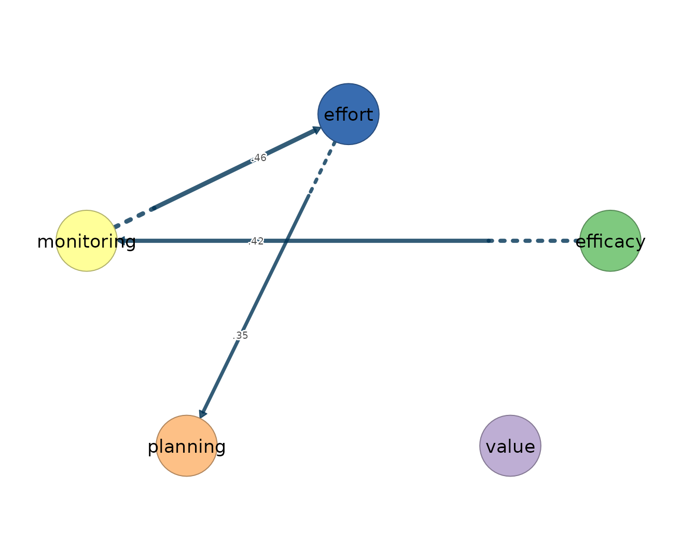
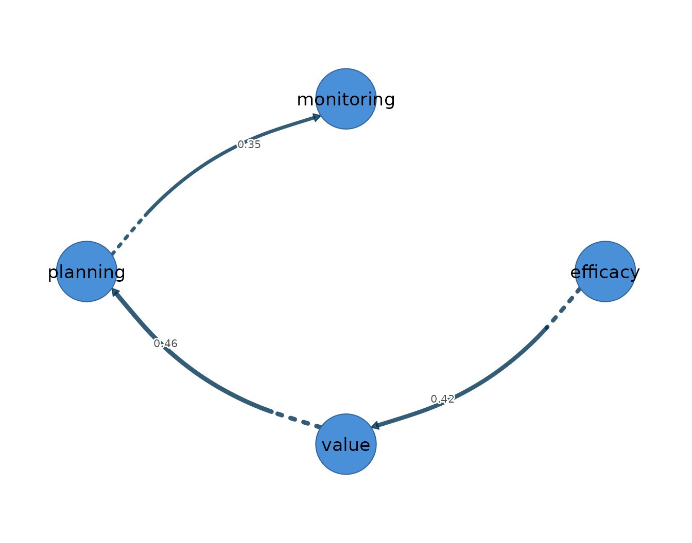

Unified structural equation modelling (uSEM) specifies a person-specific structural model for a single individual’s multivariate time series, in which each variable at the current occasion is regressed simultaneously on the lagged values of all variables — its own and the others’ — and on the other variables measured at the same occasion. It is an idiographic model, built on the premise that within-person dynamics need not match the between-person structure of the group: every coefficient describes how one person’s process unfolds around that person’s own means, not how people differ from one another. Like the other lag-one estimators in this package, it presumes weak stationarity — constant mean, variance, and autocovariance across the observation window — linear lag-one dynamics, and equally spaced occasions; to these it adds the identification requirements of a structural model, since the within-occasion paths must be estimable for each person, which constrains how many paths can be entertained relative to the length of the series.
The model yields three networks over the same variables. The temporal
network is directed and within-person: an edge
from -> to states that the person’s value of
from at occasion
predicts their value of to at occasion
,
holding the other lagged variables constant. The contemporaneous network
collects the within-occasion relations, and this layer is what separates
uSEM from VAR and graphical VAR: where those models summarize
same-occasion association as undirected partial correlations among
residuals, uSEM resolves each within-occasion relation into a
directed structural path, so an edge from -> to
records a directed same-occasion coefficient from from to
to for that person. What the directed paths leave
unexplained is carried by the third layer, an undirected
residual-covariance network among the innovations. The directed
contemporaneous reading is warranted when theory or design implies a
within-occasion ordering among the indicators; where no ordering is
defensible, the undirected graphical-VAR contemporaneous network is the
more conservative summary. GIMME, treated in the next vignette, extends
the uSEM equation with a group-level search that recovers paths shared
across people.
fit_usem() estimates one SEM per selected person and
returns temporal, directed contemporaneous, and residual-covariance
networks. With one selected person, as below, every coefficient is
idiographic. With multiple people the function also averages across
converged fits; that average summarizes the sample and is not any one
person’s model. Failed fits are reported rather than silently
included.
Data and preprocessing
The estimator takes the same long-format panel as the other
estimators: one row per person-occasion, an id column, and numeric
time-varying indicators ordered within person. The bundled
srl data hold self-regulated-learning indicators for 36
students measured over 156 occasions each; this vignette fits Grace on
five indicators: efficacy, value,
planning, monitoring, and effort.
Grace is chosen because her five series pass the input audit, not
because of the network returned later. Because uSEM is a dynamic lag-one
model that absorbs assumption violations silently — a trending series
inflates its lagged coefficients rather than producing an error — the
stationarity screen precedes the fit.
preprocess(srl, vars = vars, id = "name", subject = "Grace")
#> Idiographic Preprocessing
#> Variables: 5 (efficacy, value, planning, monitoring, effort)
#> Ordered rows: 156
#> Retained pairs: 155
#> Trend flags: 0
#> High AR flags: 0
#> Drift flags: 0
#> Unit-root risk: 0
#> Zero variance: 0
#> Tables: x$pairs | x$counts | x$diagnosticsGrace’s 156 rows yield 155 complete lagged pairs. None of the five series trips the trend, high-autoregression, mean-shift, variance-shift, unit-root, or zero-variance screen, so the series is fitted as supplied.
Fitting the model
The substantive arguments are time (orders occasions
within id), temporal ("ar" for
autoregressions only, "all" for candidate cross-lags),
contemporaneous ("none" or "all"
candidate directed same-occasion paths), and trim. A
reciprocal all-path same-occasion model is not identified as a final
SEM. Therefore trim = TRUE starts from an identified base
model and uses the documented fit and significance criteria to add and
prune candidate paths; the vignette does not present the underidentified
untrimmed model as a result. The fit and all accessors below are
evaluated when the suggested lavaan package is installed
and the build environment permits core detection. This second guard
handles restricted builders where lavaan cannot initialize its options;
no static output is substituted when execution is unavailable.
usem_fit <- fit_usem(srl, vars = vars, id = "name", time = "day",
subject = "Grace", temporal = "all",
contemporaneous = "all", trim = TRUE)
usem_fit
#> uSEM Result
#> Subjects: 1 (1 converged)
#> Variables: 5 (efficacy, value, planning, monitoring, effort)
#> Observations: median 155 (range 155-155)
#>
#> Temporal [directed]
#> no non-zero edges
#> efficacy value planning monitoring effort
#> efficacy 0 0 0 0 0
#> value 0 0 0 0 0
#> planning 0 0 0 0 0
#> monitoring 0 0 0 0 0
#> effort 0 0 0 0 0
#>
#> Contemporaneous [directed]
#> weights [0.348, 0.456] | +3 / -0 edges
#> efficacy value planning monitoring effort
#> efficacy 0 0 0.00 0.42 0.00
#> value 0 0 0.00 0.00 0.00
#> planning 0 0 0.00 0.00 0.00
#> monitoring 0 0 0.00 0.00 0.46
#> effort 0 0 0.35 0.00 0.00
#>
#> Residual_cov [undirected]
#> no non-zero edges
#> efficacy value planning monitoring effort
#> efficacy 0 0 0 0 0
#> value 0 0 0 0 0
#> planning 0 0 0 0 0
#> monitoring 0 0 0 0 0
#> effort 0 0 0 0 0
#>
#> plot(x) | plot(x, layer = "temporal") | plot(x, layer = "contemporaneous")
#> edges(x) | nodes(x) | summary(x) | coefs(x) | matrices(x)Grace’s model converges on 155 usable lagged pairs. The search retains three directed contemporaneous paths and no temporal or residual-covariance edges. That zero is an executed selection result: it says no candidate temporal path survived this uSEM search for Grace, not that the temporal layer was disabled.
Reading the output
The summary() method reports one row per network layer,
with the edge count, density, and mean absolute weight.
summary(usem_fit)
#> network n_nodes n_edges density mean_abs_weight n_positive n_negative
#> 1 temporal 5 0 0.00 0.0000000 0 0
#> 2 contemporaneous 5 3 0.15 0.4091159 3 0
#> 3 residual_cov 5 0 0.00 0.0000000 0 0The contemporaneous network has three of the 20 possible directed edges (density 0.15) and mean absolute weight 0.409. The temporal and residual layers have zero selected edges.
edges(usem_fit, network = "temporal", n = 5)
#> [1] network from to weight
#> <0 rows> (or 0-length row.names)The empty table makes the selection outcome explicit. It should not be read as proof of no lagged process; a different candidate set, trimming rule, or person can give a different selected model.
edges(usem_fit, network = "contemporaneous", n = 5)
#> network from to weight
#> 1 contemporaneous monitoring effort 0.4560847
#> 2 contemporaneous efficacy monitoring 0.4237396
#> 3 contemporaneous effort planning 0.3475233The directed contemporaneous network retains monitoring to effort (0.456), efficacy to monitoring (0.424), and effort to planning (0.348). These arrows are directed SEM coefficients conditional on the selected specification; causal interpretation still requires a defensible within-occasion ordering.
nodes(usem_fit)
#> network node strength out_strength in_strength self
#> 1 temporal efficacy 0.0000000 0.0000000 0.0000000 0
#> 2 temporal value 0.0000000 0.0000000 0.0000000 0
#> 3 temporal planning 0.0000000 0.0000000 0.0000000 0
#> 4 temporal monitoring 0.0000000 0.0000000 0.0000000 0
#> 5 temporal effort 0.0000000 0.0000000 0.0000000 0
#> 6 contemporaneous efficacy 0.4237396 0.4237396 0.0000000 0
#> 7 contemporaneous value 0.0000000 0.0000000 0.0000000 0
#> 8 contemporaneous planning 0.3475233 0.0000000 0.3475233 0
#> 9 contemporaneous monitoring 0.8798244 0.4560847 0.4237396 0
#> 10 contemporaneous effort 0.8036081 0.3475233 0.4560847 0
#> 11 residual_cov efficacy 0.0000000 NA NA 0
#> 12 residual_cov value 0.0000000 NA NA 0
#> 13 residual_cov planning 0.0000000 NA NA 0
#> 14 residual_cov monitoring 0.0000000 NA NA 0
#> 15 residual_cov effort 0.0000000 NA NA 0Because the contemporaneous layer is directed, nodes()
separates outgoing from incoming weight. Monitoring has the largest
total contemporaneous strength (0.880); it receives the efficacy path
and sends the effort path. The full path and residual matrices are
available from coefs() and matrices().
matrices(usem_fit)
#>
#> $temporal
#> efficacy value planning monitoring effort
#> efficacy 0 0 0 0 0
#> value 0 0 0 0 0
#> planning 0 0 0 0 0
#> monitoring 0 0 0 0 0
#> effort 0 0 0 0 0
#>
#> $contemporaneous
#> efficacy value planning monitoring effort
#> efficacy 0.000 0 0 0.000 0.000
#> value 0.000 0 0 0.000 0.000
#> planning 0.000 0 0 0.000 0.348
#> monitoring 0.424 0 0 0.000 0.000
#> effort 0.000 0 0 0.456 0.000
#>
#> $residual_cov
#> efficacy value planning monitoring effort
#> efficacy 0 0 0 0 0
#> value 0 0 0 0 0
#> planning 0 0 0 0 0
#> monitoring 0 0 0 0 0
#> effort 0 0 0 0 0Visualizing the network
The temporal layer is already documented as empty, so the vignette does not draw an empty showcase panel. The contemporaneous panel draws the three selected directed paths, with edge width scaled to absolute weight and colour encoding sign.
plot(usem_fit, layer = "contemporaneous")
The within-occasion structure can also be drawn as a mixed network. Directed contemporaneous paths appear as curved arrows and any residual covariances as straight edges.
plot(usem_fit, mixed = TRUE)
The monitoring-to-effort arrow is the largest retained coefficient. No residual covariance survives this search. The direction of each arrow is only as credible as the within-occasion ordering assumption behind it, which is the consideration that should govern the choice between uSEM and the undirected graphical-VAR contemporaneous summary.